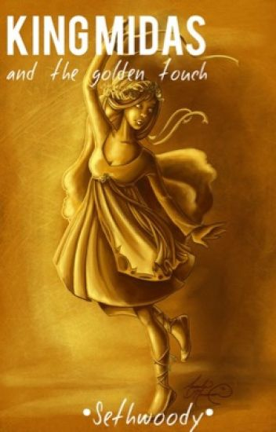
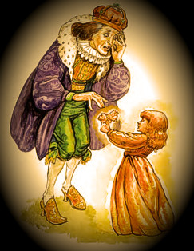

| Many years ago, there was a king named King Midas. The King was very, very rich. He was the richest king in the world, and he had more gold than any other king in the world. And the King loved his gold. He loved his gold more than anything else in all the world. He had a lot of gold, but he always wanted more gold.One day, the King was in his room counting his money when a wizard appeared in the room. The wizard said to the King, “I will give you one wish. What do you want?” The King said, “I want more gold.” The wizard said, “But you already have so much gold! You have more gold than any other king!“I will take the risk,” said the King. The next day, the King woke up very early. He was eager to see if his wish came true, and if everything he touched turned to gold. The King touched his bed lightly with his hand. The bed turned to gold. He touched a chair and a table. As soon as he touched them, they both turned to solid gold. The King felt extremely happy. He ran around the room, touching everything he could see. Everything turned to shining, yellow gold. Soon, the King felt hungry, so he went to the kitchen to eat his breakfast. But when he picked up a glass of water and tried to drink it, the water turned to gold. He couldn’t drink any water! He wanted to eat some bread, but when he touched the bread, it turned to gold. He wanted to eat some meat, but when he touched it to his mouth, it turned to gold. He couldn’t eat anything. Everything was gold!His young daughter came running into the room. The King loved his daughter very much, and he gave her a big hug. But as soon as he touched his daughter, she turned into a golden statue. She couldn’t move! The King had a feeling of great fear in his heart, and he felt as if all his joy had been taken away. In his sadness, he cried out to the wizard who had given him the gift of the golden touch. “Wizard!” he called. |  |
|  | “Please take away this horrible gift! Take all my gold. Take all my money. Take everything. Just give me back my daughter!” The wizard appeared and stood in front of the King. “Do you still think that gold is the greatest thing in the world?” asked the wizard. “No! No!” cried the King. “I hate gold! I don’t want any more of it!” “Are you sure that you no longer want the golden touch?” asked the wizard. “Yes, I’m sure,” said the King. “I’ve learned my lesson. I don’t think gold is the greatest thing in the world.” “All right,” said the wizard, “take this pitcher outside to the river and fill it with water. Then sprinkle water on the things that you have touched and turned to gold.” The King took the pitcher and rushed outside to the river. Then he ran back inside, and he sprinkled water on the head of his daughter. Instantly, she could move again. She was no longer gold. She was a normal girl again! The King was overjoyed, and he gave his daughter a big hug and kiss. Next, the King sprinkled his golden food with water, and it all turned back into real food. Then, he and his daughter sat down to eat breakfast together. The King ate his food and drank his water very eagerly. He hated the golden touch so much that he even sprinkled the chairs and tables and everything else that he had turned to gold. Now, the King hates gold. But now he is truly happy because he has his dear daughter |